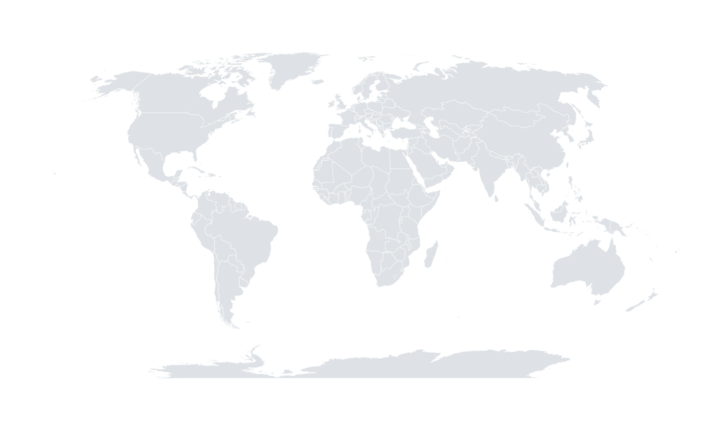
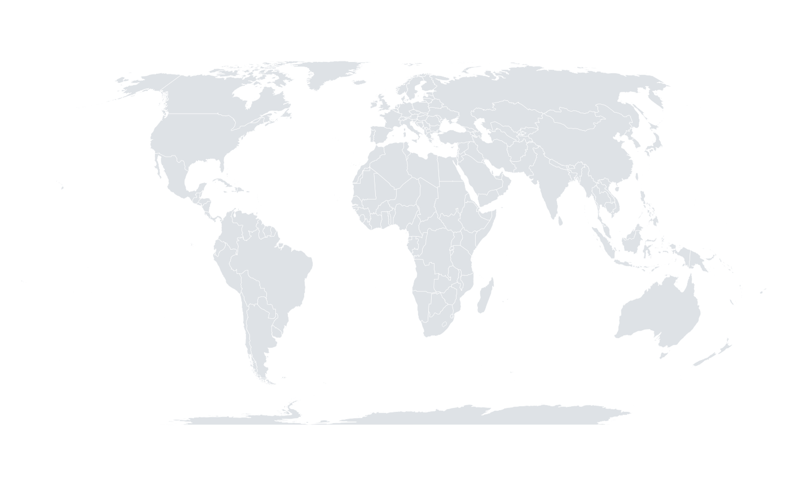
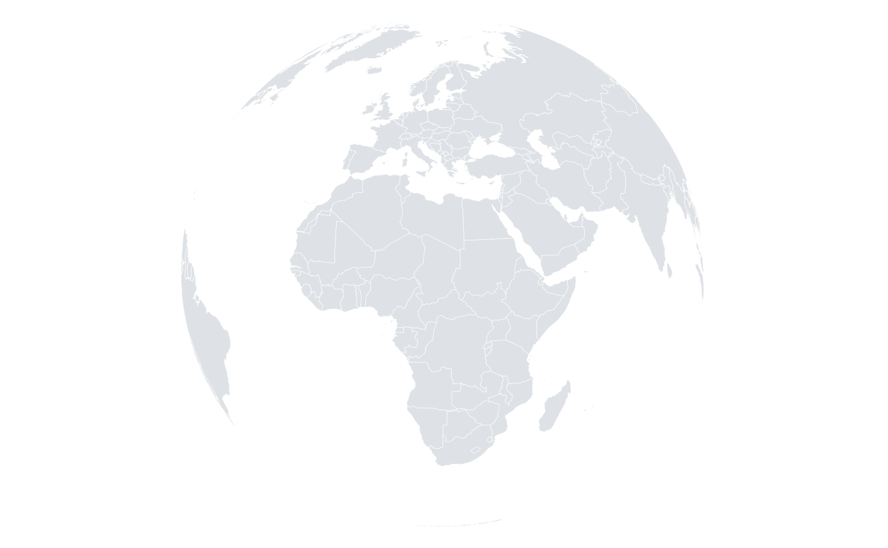

Sets the coordinate system to a geographic projection. Longitude and latitude are projected before being mapped to the panel, so map layers and point layers stay aligned.
Usage
orb_coord_map(projection = "equirectangular", centre = c(0, 0), max_lat = 84)Details
Available projections:
equirectangularLongitude and latitude used directly; simple and fast, but distorts area away from the equator.
mercatorConformal cylindrical projection; preserves angles, greatly exaggerates high latitudes. Latitudes are clipped at \(\pm\)
max_lat.robinsonA compromise projection widely used for world maps.
mollweideEqual-area pseudo-cylindrical projection.
equalearthThe Equal Earth projection of Savric, Patterson and Jenny (2019): equal-area, like Mollweide, but with continents shaped much closer to the familiar Robinson outline. A good modern default for thematic world maps, because areas are not distorted.
orthographicA view of the globe from infinite distance, centred on
centre; the hemisphere facing away from the viewer is hidden.
References
Snyder, J. P. (1987) "Map Projections: A Working Manual." US Geological Survey Professional Paper 1395. doi:10.3133/pp1395
Savric, B., Patterson, T. & Jenny, B. (2019) "The Equal Earth map projection." International Journal of Geographical Information Science 33, 454-465. doi:10.1080/13658816.2018.1504949
Examples
orb_worldmap() + orb_coord_map("robinson")
#> <orb_spec>
#> data: 26953 rows x 4 columns
#> mapping:
#> layers: map

orb_worldmap() + orb_coord_map("equalearth")
#> <orb_spec>
#> data: 26953 rows x 4 columns
#> mapping:
#> layers: map

orb_worldmap() + orb_coord_map("orthographic", centre = c(20, 15))
#> <orb_spec>
#> data: 26953 rows x 4 columns
#> mapping:
#> layers: map
